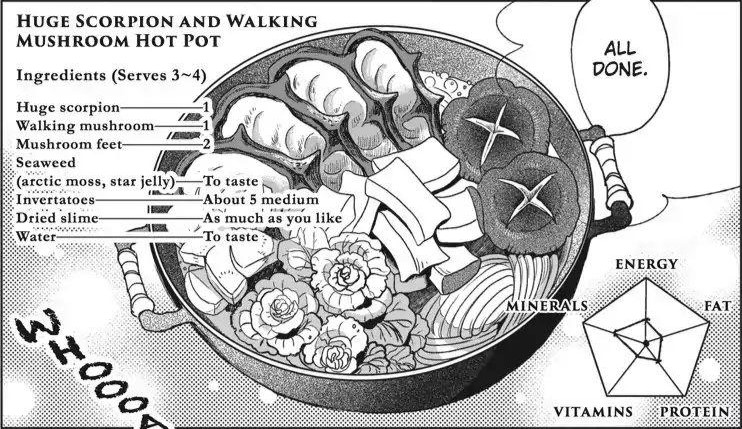

Huge Scorpion and Walking Mushroom Hotpot

A warm, nourishing dish made from ingredients found on the first floor of the dungeon. Huge scorpion, walking
msuhroom, algae, tubers and dried slime noodles. You can aslo use the leftover soup from this dish to make a
Man-Eating Plant Tart
Ingredients
(serves 3-4)
- Huge Scorpion (1)
- Walking Mushroom (1)
- Mushroom feet (2)
- Seaweed (artic moss, star jelly) (as needed)
- Invertatoes (about 5 med. size)
- Dried Slime (to preferance)
- Water (as needed)
Method
- First of all, wash the slime in hot water and a little citrus juice, either wipe the moisture off or knead salt into it, then dry it fully in the sun, the ideal is to starve it for two weeks, it also takes time to dry so maybe you can't wait all that.
- When the slime is ready cut them into noodles.
- Take of the pincers, head, legs and tail of the scorpion, you can technically eat the tail, but it will give you diarrhea.
- Cut scores along the body of the scorpion, this way the heat travels better, broth gets out, and the whole dish is tastier.
- Take out the innards of the scorpion, they are bitter and their texture isn't good. If you stew and ferment them ther are good beer snacks but that's a bit much for begginers.
- Cut away the rump (root end) and 3 centimeters of the surface of the walking mushroom,the legs are tasty so you should use all fo them.
- Cut the invertatoes in pieces.
- Add everything to the pot with water and cook it until the scorpion flesh turns red
- Enjoy!